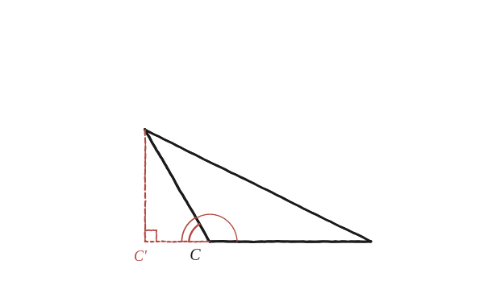

Com hauríem de definir el sinus d'un angle obtús? Ho podem fer de manera que el teorema del sinus encara es compleixi?
Què hem de produir
Una definició, no un càlcul. La definició de sinus de la Qüestió 78 —oposat dividit per hipotenusa— només té sentit per a un angle agut d'un triangle rectangle, i un angle obtús no en pot ser mai un. Cal decidir, doncs, què vol dir sin(120°). I la pregunta en fa una segona, que és la que dona valor a la primera: es pot decidir de manera que el teorema del sinus continuï valent?
La perpendicular cau fora del triangle
En un triangle ABC amb l'angle C obtús, es deixa caure l'alçada des d'A fins a la recta que conté el costat CB. Compte: no des de C —aquella cau a dins i no serveix. Com que C és obtús, el peu cau fora del segment, passat C; se'n dirà H. Al triangle rectangle ACH, l'angle que queda a C val C' = 180°−C, que sí que és agut i, per tant, sí que té sinus en el sentit de sempre.

Mirar la mateixa alçada dues vegades
Al triangle rectangle ACH: AH = b·sin(C'), amb b = CA. Al triangle rectangle ABH: AH = c·sin(B), amb c = AB —i l'angle que hi ha a B és el mateix B del triangle original, perquè H és sobre la recta BC. Igualant les dues expressions de la mateixa alçada: b/sin B = c/sin C'.
La definició no es tria: es dedueix
El teorema del sinus demana b/sin B = c/sin C. Comparant-ho amb el que acaba de sortir, no hi ha cap elecció possible: sin(C) := sin(C') = sin(180°−C) és l'única definició que el salva. No és una convenció arbitrària ni un caprici de notació —és el preu exacte de voler que la fórmula no s'hagi de partir en dos casos segons si l'angle és agut o obtús. Fet això, l'argument del cas agut es repeteix paraula per paraula i el teorema del sinus val també per als triangles obtusangles.
Es defineix sin(C) := sin(180°−C) per als angles obtusos, fent servir l'angle agut suplementari, que sí que és angle d'un triangle rectangle de veritat. I sí, el teorema del sinus continua valent —de fet, aquesta és l'única definició amb la qual continua valent: l'alçada des d'A val alhora b·sin(180°−C) i c·sin(B), i igualar-les no deixa cap altra sortida.
Comprovació
Triangle amb C=120°, a=CB=5 i b=CA=4. L'alçada des d'A val 4·sin60°≈3,464, i el peu H cau 4·cos60°=2 més enllà de C, o sigui a 5+2=7 de B; Pitàgores dona c=√(7²+3,464²)=√61≈7,810. Ara els tres quocients: c/sin C = 7,810/0,866 ≈ 9,02; sin B = 3,464/7,810 ≈ 0,4435 i b/sin B = 4/0,4435 ≈ 9,02; i amb l'alçada des de B (5·sin60°≈4,330), sin A ≈ 4,330/7,810 ≈ 0,5544 i a/sin A = 5/0,5544 ≈ 9,02. Els tres donen el mateix. De propina, A≈33,7° i B≈26,3°, i 33,7+26,3+120 = 180.
I després
Aquesta mateixa construcció —l'alçada que cau fora i l'angle suplementari— és la que fa servir la Qüestió 79 per generalitzar Pitàgores als triangles amb un angle obtús. El cosinus demana el mateix tracte, però amb una diferència de signe que val la pena entendre: la definició que fa que la fórmula de la Qüestió 79 s'escrigui com una de sola, c² = a²+b²−2ab·cos C, és cos(C) := −cos(180°−C). Per què el sinus no porta el menys i el cosinus sí? Perquè l'alçada és una longitud i no canvia de banda quan C passa de 90°, mentre que la projecció sobre la base sí que ho fa.